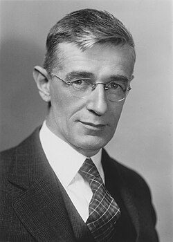

Vannevar Bush
Science administrator, 1890 to 1974

An engineer who led the Office of Scientific Research and Development in World War II, which ran almost all wartime military research, including radar and the start of the Manhattan Project. His 1945 report Science, The Endless Frontier led to the National Science Foundation, and his essay "As We May Think" inspired generations of computer scientists. 1
His name runs through UFO lore. A 1950 memo by Canadian engineer Wilbert Smith says a U.S. scientist told him America's flying saucer studies were led by Bush, and the Majestic 12 papers cast him as the man Truman authorized to set up their alleged committee. No official record confirms either, and the MJ-12 papers are considered fake. 2,3,4
Open in the interactive Watcher
Related
- Manhattan Project Started the Manhattan Project
- Wilbert Smith's flying saucer memo Named in the Wilbert Smith memo
- Majestic 12 papers surface Named in the Majestic 12 papers
Sources
- Vannevar Bush Wikipedia
- Wilbert Brockhouse Smith Wikipedia
- Majestic 12 Wikipedia
- Majestic 12 FBI Records: The Vault